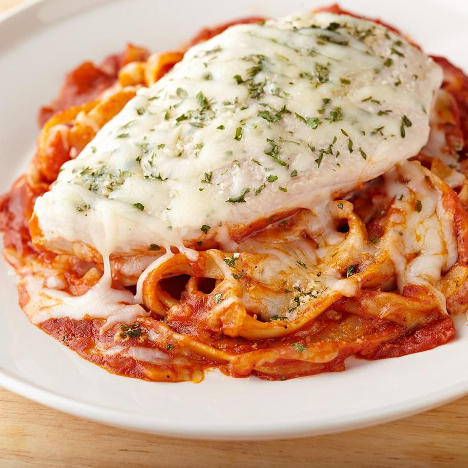

Chicken Parmesan

Description
Chicken Parmesan is a beloved American-Italian culinary creation. This delectable dish stars tender, succulent chicken perched atop a bed of perfectly cooked pasta, generously adorned with a luscious blend of melted cheese, aromatic herbs, and a flavorful tomato-based sauce. The result is an irresistible combination of flavors and textures that transforms each bite into a culinary delight.
Ingredients
- 1lb chicken breast
- 1 cup pasta (your choice)
- 1 large tomato
- 2 slices of pepperjack cheese
- 1 tbsp Italian spices
- 1/2 cup butter
Steps
Prepare the chicken:
- Season the chicken breasts with the Italian spices and Parmesan mixture on both sides.
- In a skillet, melt 2 tablespoons of butter over medium-high heat.
- Add the seasoned chicken breasts to the skillet and cook for about 5-6 minutes on each side, or until they are fully cooked and have a golden-brown crust. Remove them from the skillet and set them aside.
Cook the Pasta:
- While the chicken is cooking, bring a pot of salted water to a boil.
- Cook the pasta according to the package instructions until it reaches your desired level of doneness.
- Drain the pasta and set it aside.
Prepare the Tomato Sauce:
- In the same skillet used for the chicken, add the remaining butter.
- Dice the large tomato and add it to the skillet.
- Cook the tomato pieces until they become soft and start to release their juices, usually for about 3-4 minutes.
- Season the tomato sauce with additional Italian spices and Parmesan to taste.
Assemble the Chicken Parmesan
- Preheat your oven's broiler.
- Place the cooked chicken breasts on a baking sheet.
- Spoon the tomato sauce over each chicken breast.
- Lay a slice of pepper jack cheese on top of each chicken breast.
Broil the Chicken Parmesan:
- Place the baking sheet with the assembled chicken breasts under the broiler.
- Broil for 2-3 minutes or until the cheese is bubbly and golden brown.
Serve:
- Divide the cooked pasta among plates.
- Carefully place a Chicken Parmesan breast on top of each serving of pasta.
- Garnish with additional Parmesan cheese and fresh herbs if desired.
- Serve hot, and enjoy your homemade Chicken Parmesan!